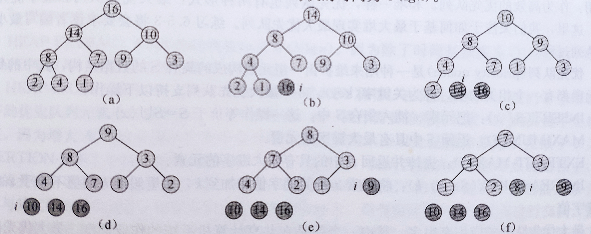

堆
(二叉)堆是一个数组，可以被看作一棵近似的完全二叉树，C语言中，堆的数据结构定义如下： 1
2
3
4
5
6typedef struct
{
int heap_size; // 堆的大小
int length; // 数组长度
int* data; // 堆中所存放的数据
}heap;
需要注意这里有两个长度：堆的大小和数组的长度，整个数组中只有一部分数据是堆的数据，因此堆的大小要小于数组的长度。这样的实现方式有利于堆排序代码的编写。
堆可以分为两种形式：最大堆和最小堆。
在这两种堆中，结点的值都要满足，堆的性质。在最大堆中，最大堆性质是指除了在最大堆中除根以外的所有结点的值都要大于等于其父节点的值，最小堆则相反，要小于等于其父节点的值。
在堆排序算法中，我们使用的是最大堆，而最小堆往往用于构造优先队列。
堆的基本性质
在介绍堆排序的基本过程之前先简单说一下堆的一些基本的性质。
因为堆在实现时是一个数组，因此可以按层从左往右依次对堆中的元素进行标号。如果我们从1开始标号即那么此时的堆为A[1..heap-size]。同时，堆还能被看作一颗完全二叉树，因此结点之间还存在父子关系，求某个结点i的父节点或者左右孩子结点的伪代码如下： 1
2
3
4
5
6
7
8PARENT(i)
return i/2
LCHILD(i)
return 2i
RCHILD(i)
return 2i+1
定理：当用数组表示存储n个元素的堆时，叶结点的下标分别是\(\left \lfloor n/2\right \rfloor + 1, \left \lfloor n/2 \right \rfloor + 2, \dots, n\)。
证明：根据左孩子结点的下标计算公式可以得到\(\left \lfloor n/2\right \rfloor + 1\)的左孩子下标至少为\(n+1\)，即该结点没有左孩子，因此该结点为叶结点。而该结点的前一结点的左孩子下标至多为\(n\)，即前一结点为非叶结点。
堆的基本过程
维护堆的性质
max_heapify()是用于维护最大堆性质的重要过程。C语言的函数定义为： 1
2
3
4
5
6
7
8
9
10
11
12
13
14
15
16
17
18
19void max_heapify(heap* h, int i) {
int l, r, largest;
l = LCHILD(i);
r = RCHILD(i);
largest = i;
if ((h->data[largest] < h->data[l]) && (l < h->heap_size))
{
largest = l;
}
if ((h->data[largest] < h->data[r]) && (r < h->heap_size))
{
largest = r;
}
if (largest != i)
{
SWAP(int, h->data[i], h->data[largest]);
max_heapify(h, largest);
}
}
函数的输入为一个指向堆的指针\(h\)和一个下标\(i\)，下标\(i\)即我们需要维护的堆的根结点。把该根结点与其左右孩子结点比较找到三结点中最大的结点，如果根结点不是最大结点，就把最大结点和根结点交换。因为交换后的结点可能会违背最大堆性质，所以再递归调用max_heapify()。
max_heapify()的时间复杂度与堆的高度有关，即时间复杂度为\(O(h)\)或者\(O(\lg n)\)。
如果以结点\(i\)为根，树中除根结点外的所有结点都满足最大堆性质，此时调用max_heapify(i)就能得到一个以\(i\)为根的最大堆。
建堆
通过自底向上的方法利用过程max_heapify()可以把一个大小为\(n=A.length\)的数组\(A[1..n]\)转化为最大堆。C语言实现代码如下： 1
2
3
4
5
6
7
8
9
10
11heap* build_max_heap(int* array, int length){
heap* h;
h = (heap*)malloc(sizeof(heap));
h->heap_size = h->length = length;
h->data = array;
for (int i = (h->heap_size/2) - 1; i >= 0; i--)
{
max_heapify(h, i);
}
return h;
}
通过一个循环不变式可以证明build_max_heap()的正确性。
初始化:在第一次循环迭代之前，\(i=\left \lfloor n/2\right \rfloor\)，而\(\left \lfloor n/2\right \rfloor + 1, \left \lfloor n/2 \right \rfloor + 2, \dots, n\)都是叶结点，即都是最大堆的根结点。
保持:每次调用max_heapify(i)之前，结点\(i\)的孩子结点都比\(i\)大，根据循环不变量，它们都是最大堆的根。而max_heapify()维持了结点\(i+1, i+2, \dots, n\)最大堆根结点的性质。
终止:过程终止时，\(i=0\)。根据循环不变量，每个结点\(1, 2, \dots, n\)都是一个最大堆的根。
最终所有的结点都满足最大堆性质，此时最大堆构建完成。build_max_heap()的时间复杂度为\(O(n)\)。
堆排序算法
1 | void heapsort(int* array, int length){ |
在前两个过程的基础上，堆排序就很简单了。首先，调用build_max_heap()建立一个最大堆。堆建好之后，此时根结点必定为最大值，然后通过交换，把根结点交换到最后。缩短堆的大小，此时原本的根结点被排好序并被排除在堆外。之后再次调用max_heapify()重新将新的堆变为最大堆。重复以上的过程，最终就能得到一个从小到大依次排序的数组。
